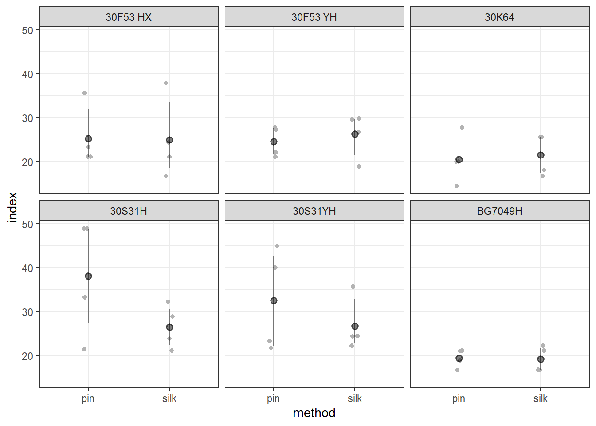
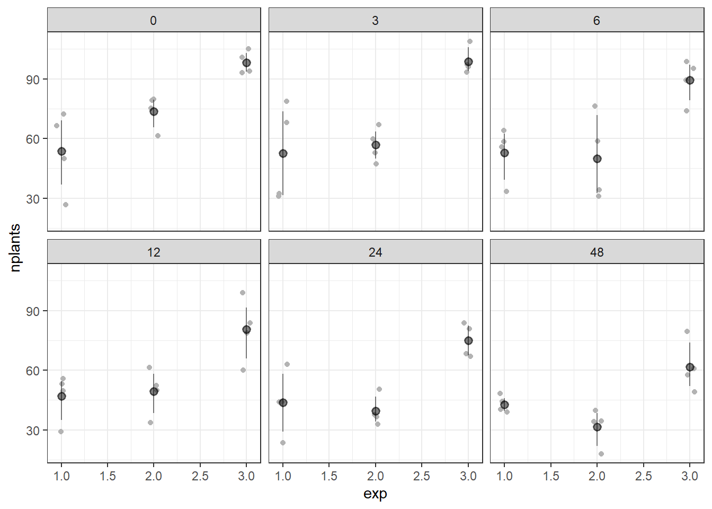
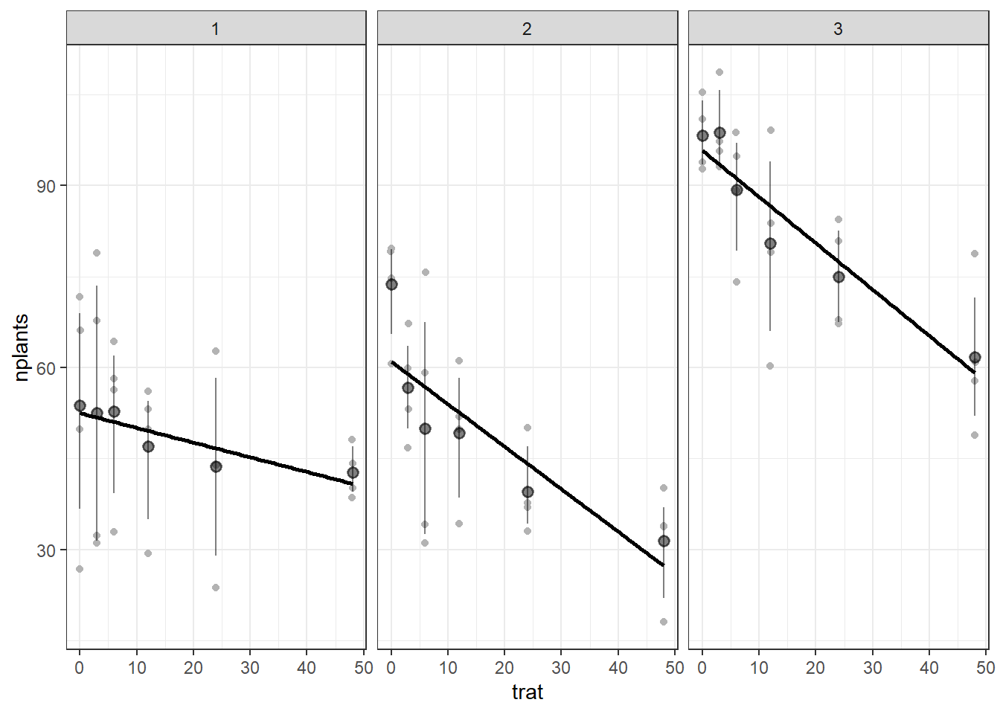

indx <- milho |>ggplot(aes(method, index ))+geom_jitter(width =0.05, color ="gray70")+facet_wrap(~ hybrid)+#Sem o facet_wrap fica somente por tratamento.stat_summary(fun.data ="mean_cl_boot", size =0.5, color ="black", alpha =0.5)indx

Modelo para subdividida
library(lme4)
Carregando pacotes exigidos: Matrix
Anexando pacote: 'Matrix'
Os seguintes objetos são mascarados por 'package:tidyr':
expand, pack, unpack
library(car)
Carregando pacotes exigidos: carData
Anexando pacote: 'car'
O seguinte objeto é mascarado por 'package:dplyr':
recode
O seguinte objeto é mascarado por 'package:purrr':
some
milho <- milho |>mutate(block =as.factor(block))#lmer é o modelo linear do lme4mix2 <-lmer(index ~ hybrid*method + block+ (1|block/hybrid), data = milho)
Warning in checkConv(attr(opt, "derivs"), opt$par, ctrl = control$checkConv, :
unable to evaluate scaled gradient
Warning in checkConv(attr(opt, "derivs"), opt$par, ctrl = control$checkConv, :
Model failed to converge: degenerate Hessian with 1 negative eigenvalues
Warning: pacote 'DHARMa' foi compilado no R versão 4.4.1
This is DHARMa 0.4.6. For overview type '?DHARMa'. For recent changes, type news(package = 'DHARMa')
plot(simulateResiduals(mix2))
Transformação - Raiz quadrada
milho <- milho |>mutate(block =as.factor(block))#lmer é o modelo linear do lme4mix3 <-lmer(sqrt(index) ~ hybrid*method + block+ (1|block/hybrid), data = milho)
Warning in checkConv(attr(opt, "derivs"), opt$par, ctrl = control$checkConv, :
unable to evaluate scaled gradient
Warning in checkConv(attr(opt, "derivs"), opt$par, ctrl = control$checkConv, :
Model failed to converge: degenerate Hessian with 1 negative eigenvalues
Warning: pacote 'survival' foi compilado no R versão 4.4.1
Carregando pacotes exigidos: TH.data
Carregando pacotes exigidos: MASS
Warning: pacote 'MASS' foi compilado no R versão 4.4.1
Anexando pacote: 'MASS'
O seguinte objeto é mascarado por 'package:dplyr':
select
Anexando pacote: 'TH.data'
O seguinte objeto é mascarado por 'package:MASS':
geyser
cld(medias_milho1, Letters = LETTERS)
method = pin:
hybrid response SE df lower.CL upper.CL .group
BG7049H 19.4 10.7 6084 4.10 46.0 A
30K64 20.3 10.9 6084 4.51 47.4 A
30F53 YH 24.5 12.0 6084 6.61 53.7 AB
30F53 HX 25.0 12.1 6084 6.84 54.4 AB
30S31YH 31.7 13.7 6084 10.57 64.2 AB
30S31H 37.1 14.8 6084 13.79 71.8 B
method = silk:
hybrid response SE df lower.CL upper.CL .group
BG7049H 19.1 10.6 6084 3.96 45.6 A
30K64 21.3 11.2 6084 5.00 48.9 A
30F53 HX 24.4 12.0 6084 6.56 53.6 A
30F53 YH 26.0 12.4 6084 7.42 56.0 A
30S31H 26.3 12.5 6084 7.57 56.4 A
30S31YH 26.4 12.5 6084 7.62 56.5 A
Results are averaged over the levels of: block
Degrees-of-freedom method: kenward-roger
Confidence level used: 0.95
Intervals are back-transformed from the sqrt scale
Note: contrasts are still on the sqrt scale
P value adjustment: tukey method for comparing a family of 6 estimates
significance level used: alpha = 0.05
NOTE: If two or more means share the same grouping symbol,
then we cannot show them to be different.
But we also did not show them to be the same.
cld(medias_milho2, Letters = letters)
hybrid = 30F53 HX:
method response SE df lower.CL upper.CL .group
silk 24.4 12.0 6084 6.56 53.6 a
pin 25.0 12.1 6084 6.84 54.4 a
hybrid = 30F53 YH:
method response SE df lower.CL upper.CL .group
pin 24.5 12.0 6084 6.61 53.7 a
silk 26.0 12.4 6084 7.42 56.0 a
hybrid = 30K64:
method response SE df lower.CL upper.CL .group
pin 20.3 10.9 6084 4.51 47.4 a
silk 21.3 11.2 6084 5.00 48.9 a
hybrid = 30S31H:
method response SE df lower.CL upper.CL .group
silk 26.3 12.5 6084 7.57 56.4 a
pin 37.1 14.8 6084 13.79 71.8 b
hybrid = 30S31YH:
method response SE df lower.CL upper.CL .group
silk 26.4 12.5 6084 7.62 56.5 a
pin 31.7 13.7 6084 10.57 64.2 a
hybrid = BG7049H:
method response SE df lower.CL upper.CL .group
silk 19.1 10.6 6084 3.96 45.6 a
pin 19.4 10.7 6084 4.10 46.0 a
Results are averaged over the levels of: block
Degrees-of-freedom method: kenward-roger
Confidence level used: 0.95
Intervals are back-transformed from the sqrt scale
Note: contrasts are still on the sqrt scale
significance level used: alpha = 0.05
NOTE: If two or more means share the same grouping symbol,
then we cannot show them to be different.
But we also did not show them to be the same.
Agora para produtividade
mix4 <-lmer(sqrt(yield) ~ hybrid*method + block+ (1|block/hybrid), data = milho)
Warning in checkConv(attr(opt, "derivs"), opt$par, ctrl = control$checkConv, : Model is nearly unidentifiable: large eigenvalue ratio
- Rescale variables?
method = pin:
hybrid response SE df lower.CL upper.CL .group
30S31YH 7829 732 26.1 6398 9405 A
30S31H 8081 743 26.1 6626 9681 AB
30F53 YH 9314 798 26.1 7746 11027 ABC
30F53 HX 11130 872 26.1 9410 12995 BC
30K64 11666 893 26.1 9903 13574 C
BG7049H 11914 903 26.1 10131 13841 C
method = silk:
hybrid response SE df lower.CL upper.CL .group
30S31YH 8257 751 26.1 6785 9873 A
30F53 YH 9079 788 26.1 7532 10770 A
30S31H 9135 790 26.1 7583 10832 A
30F53 HX 9932 824 26.1 8311 11698 AB
30K64 10331 840 26.1 8676 12131 AB
BG7049H 12822 936 26.1 10970 14818 B
Results are averaged over the levels of: block
Degrees-of-freedom method: kenward-roger
Confidence level used: 0.95
Intervals are back-transformed from the sqrt scale
Note: contrasts are still on the sqrt scale
P value adjustment: tukey method for comparing a family of 6 estimates
significance level used: alpha = 0.05
NOTE: If two or more means share the same grouping symbol,
then we cannot show them to be different.
But we also did not show them to be the same.
cld(medias_milho4, Letters = letters)
hybrid = 30F53 HX:
method response SE df lower.CL upper.CL .group
silk 9932 824 26.1 8311 11698 a
pin 11130 872 26.1 9410 12995 b
hybrid = 30F53 YH:
method response SE df lower.CL upper.CL .group
silk 9079 788 26.1 7532 10770 a
pin 9314 798 26.1 7746 11027 a
hybrid = 30K64:
method response SE df lower.CL upper.CL .group
silk 10331 840 26.1 8676 12131 a
pin 11666 893 26.1 9903 13574 b
hybrid = 30S31H:
method response SE df lower.CL upper.CL .group
pin 8081 743 26.1 6626 9681 a
silk 9135 790 26.1 7583 10832 b
hybrid = 30S31YH:
method response SE df lower.CL upper.CL .group
pin 7829 732 26.1 6398 9405 a
silk 8257 751 26.1 6785 9873 a
hybrid = BG7049H:
method response SE df lower.CL upper.CL .group
pin 11914 903 26.1 10131 13841 a
silk 12822 936 26.1 10970 14818 a
Results are averaged over the levels of: block
Degrees-of-freedom method: kenward-roger
Confidence level used: 0.95
Intervals are back-transformed from the sqrt scale
Note: contrasts are still on the sqrt scale
significance level used: alpha = 0.05
NOTE: If two or more means share the same grouping symbol,
then we cannot show them to be different.
But we also did not show them to be the same.
nplan <- estande |>ggplot(aes(exp, nplants ))+geom_jitter(width =0.05, color ="gray70")+facet_wrap(~ trat)+#Sem o facet_wrap fica somente por tratamento.stat_summary(fun.data ="mean_cl_boot", size =0.5, color ="black", alpha =0.5)nplan

nplan <- estande |>ggplot(aes(trat, nplants ))+geom_jitter(width =0.05, color ="gray70")+facet_wrap(~ exp)+#Sem o facet_wrap fica somente por tratamento.stat_summary(fun.data ="mean_cl_boot", size =0.5, color ="black", alpha =0.5)+geom_smooth(method ="lm", se = F, color ="black")nplan
`geom_smooth()` using formula = 'y ~ x'

nplan <- estande |>ggplot(aes(trat, nplants ))+geom_jitter(width =0.05, color ="gray70")+facet_wrap(~ exp)+#Sem o facet_wrap fica somente por tratamento.stat_summary(fun.data ="mean_cl_boot", size =0.5, color ="black", alpha =0.5)+geom_smooth(method ="lm", se = F, color ="black")nplan
`geom_smooth()` using formula = 'y ~ x'
A cada acrescimo tem a queda de aproximadamene, 24 plantas (trat - 0.24)
Call: glm(formula = nplants ~ trat, family = "gaussian", data = exp1)
Coefficients:
(Intercept) trat
52.5000 -0.2419
Degrees of Freedom: 23 Total (i.e. Null); 22 Residual
Null Deviance: 5330
Residual Deviance: 4949 AIC: 202
summary(glm1)
Call:
glm(formula = nplants ~ trat, family = "gaussian", data = exp1)
Coefficients:
Estimate Std. Error t value Pr(>|t|)
(Intercept) 52.5000 4.2044 12.487 1.84e-11 ***
trat -0.2419 0.1859 -1.301 0.207
---
Signif. codes: 0 '***' 0.001 '**' 0.01 '*' 0.05 '.' 0.1 ' ' 1
(Dispersion parameter for gaussian family taken to be 224.9751)
Null deviance: 5330.5 on 23 degrees of freedom
Residual deviance: 4949.5 on 22 degrees of freedom
AIC: 202
Number of Fisher Scoring iterations: 2
Call: glm(formula = nplants ~ trat, family = "gaussian", data = exp2)
Coefficients:
(Intercept) trat
60.9857 -0.7007
Degrees of Freedom: 23 Total (i.e. Null); 22 Residual
Null Deviance: 6887
Residual Deviance: 3690 AIC: 195
summary(glm2)
Call:
glm(formula = nplants ~ trat, family = "gaussian", data = exp2)
Coefficients:
Estimate Std. Error t value Pr(>|t|)
(Intercept) 60.9857 3.6304 16.798 4.93e-14 ***
trat -0.7007 0.1605 -4.365 0.000247 ***
---
Signif. codes: 0 '***' 0.001 '**' 0.01 '*' 0.05 '.' 0.1 ' ' 1
(Dispersion parameter for gaussian family taken to be 167.7464)
Null deviance: 6886.6 on 23 degrees of freedom
Residual deviance: 3690.4 on 22 degrees of freedom
AIC: 194.96
Number of Fisher Scoring iterations: 2
Call: glm(formula = nplants ~ trat, family = "poisson", data = exp2)
Coefficients:
(Intercept) trat
4.13419 -0.01627
Degrees of Freedom: 23 Total (i.e. Null); 22 Residual
Null Deviance: 139.8
Residual Deviance: 69.58 AIC: 210.2
summary(glm2b)
Call:
glm(formula = nplants ~ trat, family = "poisson", data = exp2)
Coefficients:
Estimate Std. Error z value Pr(>|z|)
(Intercept) 4.134189 0.037583 110.003 < 2e-16 ***
trat -0.016270 0.002059 -7.901 2.76e-15 ***
---
Signif. codes: 0 '***' 0.001 '**' 0.01 '*' 0.05 '.' 0.1 ' ' 1
(Dispersion parameter for poisson family taken to be 1)
Null deviance: 139.783 on 23 degrees of freedom
Residual deviance: 69.578 on 22 degrees of freedom
AIC: 210.24
Number of Fisher Scoring iterations: 4
Call: glm(formula = nplants ~ trat, family = "gaussian", data = exp3)
Coefficients:
(Intercept) trat
95.7500 -0.7634
Degrees of Freedom: 23 Total (i.e. Null); 22 Residual
Null Deviance: 6236
Residual Deviance: 2442 AIC: 185
summary(glm3)
Call:
glm(formula = nplants ~ trat, family = "gaussian", data = exp3)
Coefficients:
Estimate Std. Error t value Pr(>|t|)
(Intercept) 95.7500 2.9529 32.425 < 2e-16 ***
trat -0.7634 0.1306 -5.847 6.97e-06 ***
---
Signif. codes: 0 '***' 0.001 '**' 0.01 '*' 0.05 '.' 0.1 ' ' 1
(Dispersion parameter for gaussian family taken to be 110.9787)
Null deviance: 6235.8 on 23 degrees of freedom
Residual deviance: 2441.5 on 22 degrees of freedom
AIC: 185.04
Number of Fisher Scoring iterations: 2
Call: glm(formula = nplants ~ trat, family = "poisson", data = exp3)
Coefficients:
(Intercept) trat
4.571590 -0.009965
Degrees of Freedom: 23 Total (i.e. Null); 22 Residual
Null Deviance: 77.91
Residual Deviance: 29.95 AIC: 183.9
summary(glm3b)
Call:
glm(formula = nplants ~ trat, family = "poisson", data = exp3)
Coefficients:
Estimate Std. Error z value Pr(>|z|)
(Intercept) 4.571590 0.029539 154.762 < 2e-16 ***
trat -0.009965 0.001488 -6.697 2.13e-11 ***
---
Signif. codes: 0 '***' 0.001 '**' 0.01 '*' 0.05 '.' 0.1 ' ' 1
(Dispersion parameter for poisson family taken to be 1)
Null deviance: 77.906 on 23 degrees of freedom
Residual deviance: 29.952 on 22 degrees of freedom
AIC: 183.93
Number of Fisher Scoring iterations: 4
AIC(glm3b)
[1] 183.9324
MODELO MISTOS -> quando tem efeito aleatório o ideal é ter mais de 6 ou 7 níveis de experimentos diferentes. Aqui temos locais aleatórios diferentes.
Efeito alétório dos tratamentos no experimento -> (trat|exp).
Modelo mais robusto que da mais informações, em bloco, como é aleatório pode ser feito também. O efeito é baseado em uma amostra maior, por isso é mais robusto.
print("-=-=-=- GAUSSIAN -=-=-=-")
[1] "-=-=-=- GAUSSIAN -=-=-=-"
glmer3 <-glmer(nplants ~ trat + (trat|exp),family ="gaussian",data = estande)
Warning in glmer(nplants ~ trat + (trat | exp), family = "gaussian", data =
estande): calling glmer() with family=gaussian (identity link) as a shortcut to
lmer() is deprecated; please call lmer() directly
Warning in checkConv(attr(opt, "derivs"), opt$par, ctrl = control$checkConv, :
Model failed to converge with max|grad| = 0.00274249 (tol = 0.002, component 1)
glmer3
Linear mixed model fit by REML ['lmerMod']
Formula: nplants ~ trat + (trat | exp)
Data: estande
REML criterion at convergence: 580.8402
Random effects:
Groups Name Std.Dev. Corr
exp (Intercept) 22.5983
trat 0.2349 -0.82
Residual 12.9581
Number of obs: 72, groups: exp, 3
Fixed Effects:
(Intercept) trat
69.7452 -0.5687
optimizer (nloptwrap) convergence code: 0 (OK) ; 0 optimizer warnings; 1 lme4 warnings
summary(glmer3)
Linear mixed model fit by REML ['lmerMod']
Formula: nplants ~ trat + (trat | exp)
Data: estande
REML criterion at convergence: 580.8
Scaled residuals:
Min 1Q Median 3Q Max
-2.0988 -0.6091 0.1722 0.6360 1.9963
Random effects:
Groups Name Variance Std.Dev. Corr
exp (Intercept) 510.68405 22.5983
trat 0.05516 0.2349 -0.82
Residual 167.91303 12.9581
Number of obs: 72, groups: exp, 3
Fixed effects:
Estimate Std. Error t value
(Intercept) 69.7452 13.2146 5.278
trat -0.5687 0.1643 -3.462
Correlation of Fixed Effects:
(Intr)
trat -0.731
optimizer (nloptwrap) convergence code: 0 (OK)
Model failed to converge with max|grad| = 0.00274249 (tol = 0.002, component 1)
AIC(glmer3)
[1] 592.8402
print("-=-=-=- POISSON -=-=-=-")
[1] "-=-=-=- POISSON -=-=-=-"
glmer3b <-glmer(nplants ~ trat + (trat|exp),family ="poisson",data = estande)glmer3b
Generalized linear mixed model fit by maximum likelihood (Laplace
Approximation) [glmerMod]
Family: poisson ( log )
Formula: nplants ~ trat + (trat | exp)
Data: estande
AIC BIC logLik deviance df.resid
660.7282 672.1115 -325.3641 650.7282 67
Random effects:
Groups Name Std.Dev. Corr
exp (Intercept) 0.253478
trat 0.004003 -0.17
Number of obs: 72, groups: exp, 3
Fixed Effects:
(Intercept) trat
4.22340 -0.01043
summary(glmer3b)
Generalized linear mixed model fit by maximum likelihood (Laplace
Approximation) [glmerMod]
Family: poisson ( log )
Formula: nplants ~ trat + (trat | exp)
Data: estande
AIC BIC logLik deviance df.resid
660.7 672.1 -325.4 650.7 67
Scaled residuals:
Min 1Q Median 3Q Max
-3.6247 -0.8083 0.1042 0.9601 3.6511
Random effects:
Groups Name Variance Std.Dev. Corr
exp (Intercept) 6.425e-02 0.253478
trat 1.602e-05 0.004003 -0.17
Number of obs: 72, groups: exp, 3
Fixed effects:
Estimate Std. Error z value Pr(>|z|)
(Intercept) 4.223397 0.147793 28.577 < 2e-16 ***
trat -0.010434 0.002538 -4.111 3.93e-05 ***
---
Signif. codes: 0 '***' 0.001 '**' 0.01 '*' 0.05 '.' 0.1 ' ' 1
Correlation of Fixed Effects:
(Intr)
trat -0.192
AIC(glmer3b)
[1] 660.7282
Pacote do professor
library(remotes)
Warning: pacote 'remotes' foi compilado no R versão 4.4.1
remotes::install_github("emdelponte/r4pde")
Skipping install of 'r4pde' from a github remote, the SHA1 (42e6615b) has not changed since last install.
Use `force = TRUE` to force installation
library(lme4)glm3 <-glmer(nplants ~ trat + (trat | exp), family ="gaussian",data = estande)
Warning in glmer(nplants ~ trat + (trat | exp), family = "gaussian", data =
estande): calling glmer() with family=gaussian (identity link) as a shortcut to
lmer() is deprecated; please call lmer() directly
Warning in checkConv(attr(opt, "derivs"), opt$par, ctrl = control$checkConv, :
Model failed to converge with max|grad| = 0.00274249 (tol = 0.002, component 1)
summary(glm3)
Linear mixed model fit by REML ['lmerMod']
Formula: nplants ~ trat + (trat | exp)
Data: estande
REML criterion at convergence: 580.8
Scaled residuals:
Min 1Q Median 3Q Max
-2.0988 -0.6091 0.1722 0.6360 1.9963
Random effects:
Groups Name Variance Std.Dev. Corr
exp (Intercept) 510.68405 22.5983
trat 0.05516 0.2349 -0.82
Residual 167.91303 12.9581
Number of obs: 72, groups: exp, 3
Fixed effects:
Estimate Std. Error t value
(Intercept) 69.7452 13.2146 5.278
trat -0.5687 0.1643 -3.462
Correlation of Fixed Effects:
(Intr)
trat -0.731
optimizer (nloptwrap) convergence code: 0 (OK)
Model failed to converge with max|grad| = 0.00274249 (tol = 0.002, component 1)
AIC(glm3)
[1] 592.8402
glmb3 <-glmer(nplants ~ trat + (trat | exp), family =poisson(link ="log"), data = estande)summary(glmb3)
Generalized linear mixed model fit by maximum likelihood (Laplace
Approximation) [glmerMod]
Family: poisson ( log )
Formula: nplants ~ trat + (trat | exp)
Data: estande
AIC BIC logLik deviance df.resid
660.7 672.1 -325.4 650.7 67
Scaled residuals:
Min 1Q Median 3Q Max
-3.6247 -0.8083 0.1042 0.9601 3.6511
Random effects:
Groups Name Variance Std.Dev. Corr
exp (Intercept) 6.425e-02 0.253478
trat 1.602e-05 0.004003 -0.17
Number of obs: 72, groups: exp, 3
Fixed effects:
Estimate Std. Error z value Pr(>|z|)
(Intercept) 4.223397 0.147793 28.577 < 2e-16 ***
trat -0.010434 0.002538 -4.111 3.93e-05 ***
---
Signif. codes: 0 '***' 0.001 '**' 0.01 '*' 0.05 '.' 0.1 ' ' 1
Correlation of Fixed Effects:
(Intr)
trat -0.192
AIC(glmb3)
[1] 660.7282
library(r4pde)
Warning: substituindo importação prévia 'car::recode' por 'dplyr::recode'
quando carregando 'r4pde'
wm <- WhiteMoldSoybeanwm |>ggplot(aes(inc, yld, group =factor(study)))+geom_point()+#facet_wrap(~ study)+geom_smooth(method ="lm", se = F)